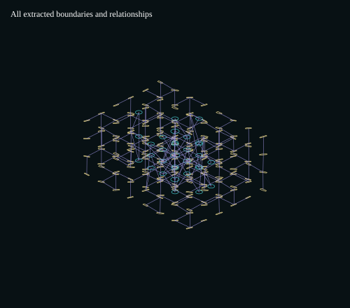
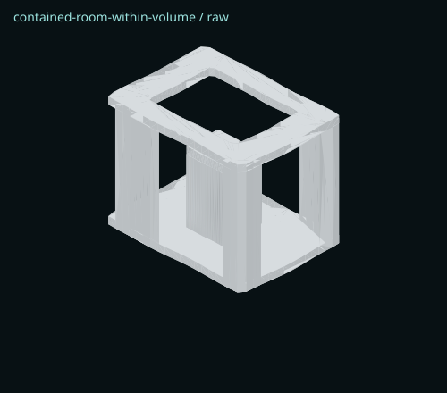
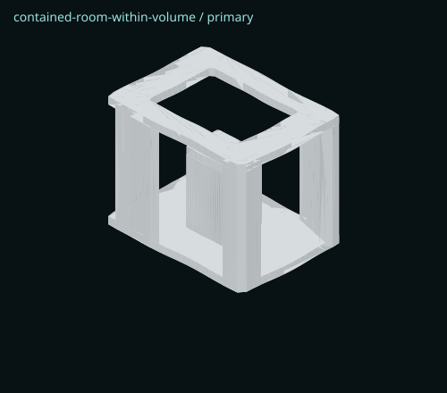
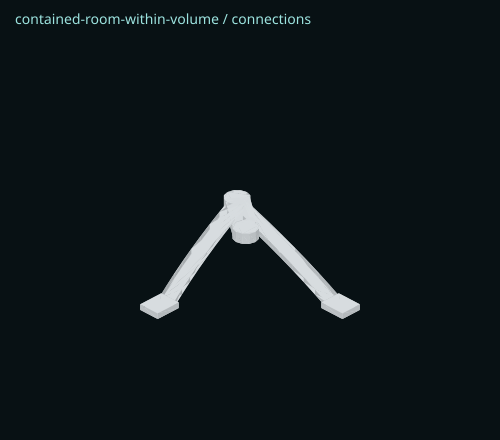
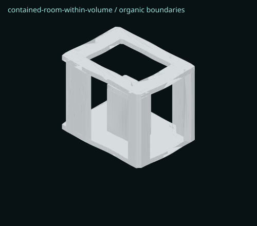


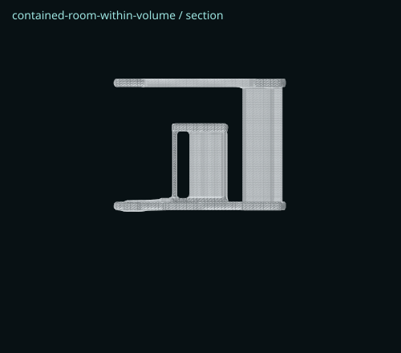
Same 192-letter source, seed 2041, descriptors and organic controls. Raw/primary views are contour extrusions before connectors and reconstruction. Organic boundaries are developed after circulation; final views show continuous reconstruction. Source geometry and all stage data are included in the JSON records.







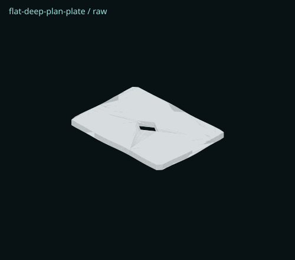
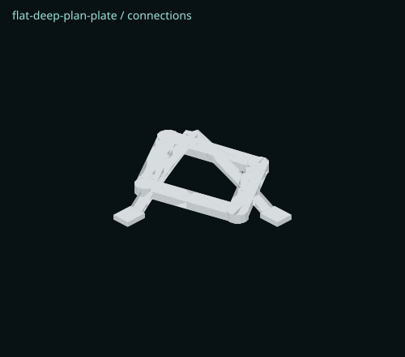
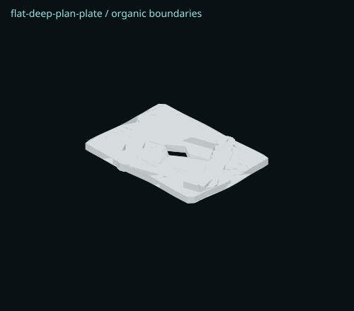
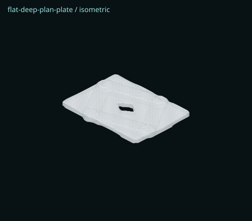
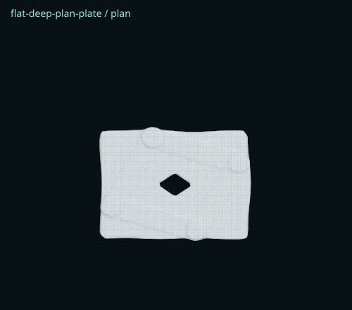
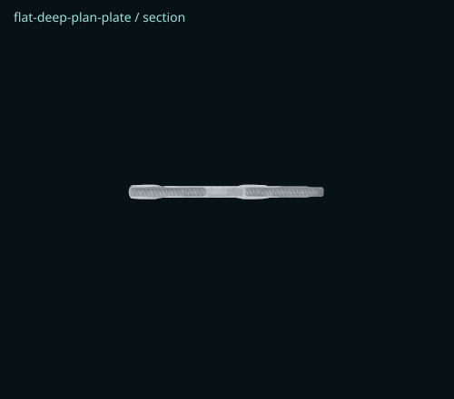

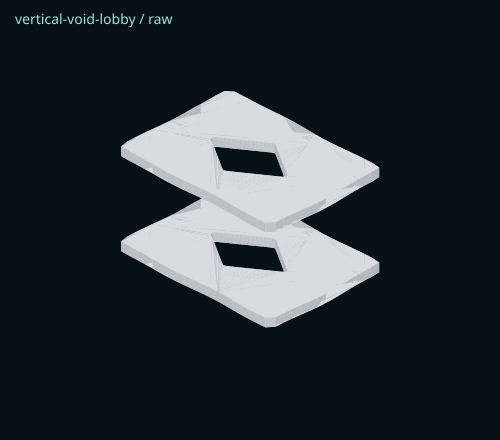
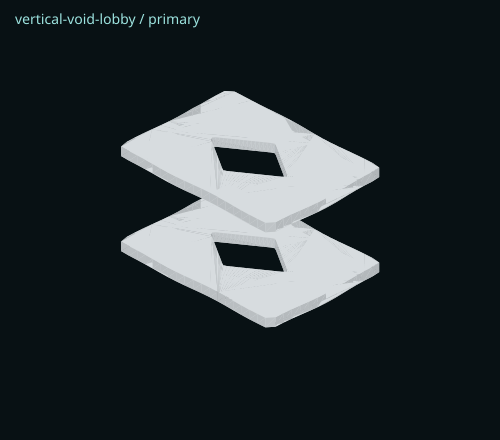
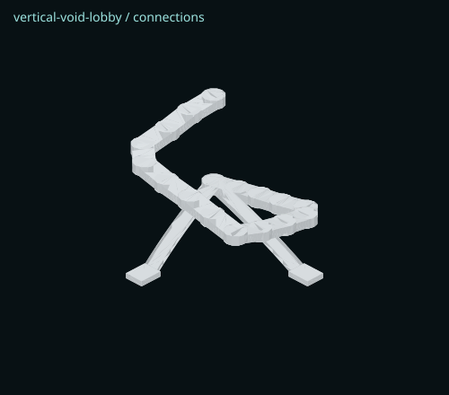
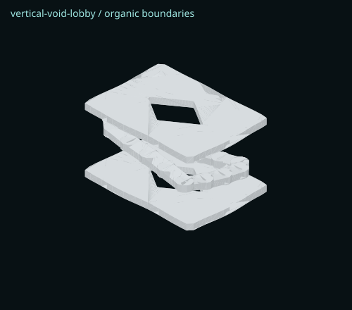


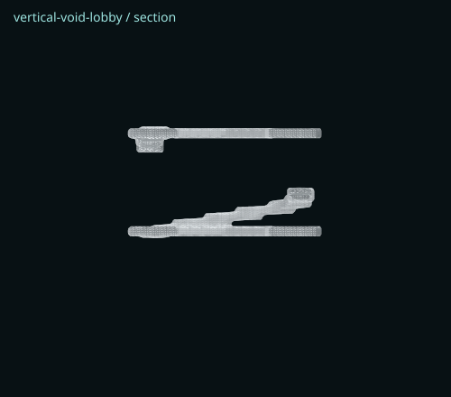